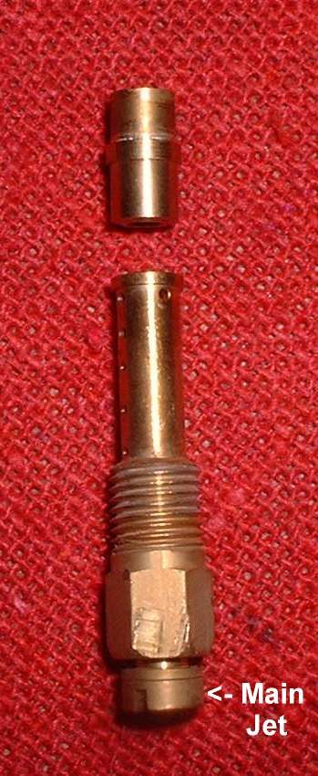
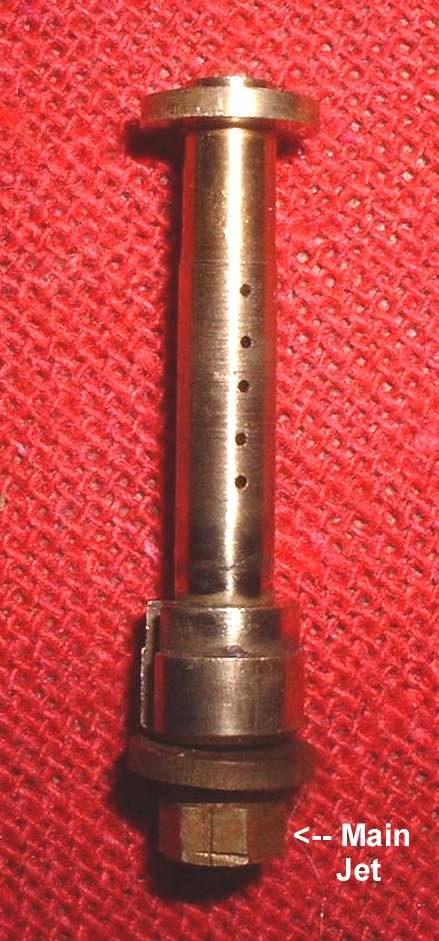
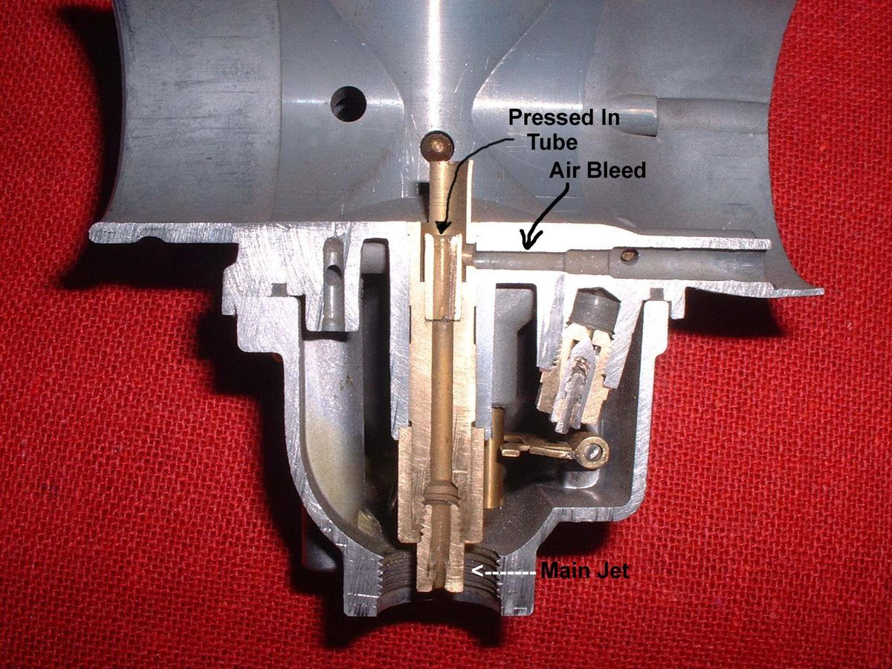

The needle jet is a short brass tube in the middle of the carburettor. The jet needle moves in its top end and the main jet screws in at its bottom. Fuel passes through the gap between the needle and the tube, so the shape of the needle decides how much fuel flows. It controls the mixture from about 15 to 60 percent throttle, and it feeds the mid range.
What it does
There are three common styles. The Mikuni primary style is the most common, with a round tube pressed into the top. The Mikuni bleed style is similar. The Keihin style screws into the body. All have an air bleed hole in the side, which takes air from the air cleaner side and mixes it with the fuel. This bleed can be an open passage or have a small air jet.
Signs it is worn or failing
- Flat spot or stumble in the mid range: Flat spot in acceleration.
- Runs lean or rich in the mid range with no other cause: Engine runs lean and Engine runs rich.
- A blocked air bleed hole, or a bore worn oval, found at a rebuild.
When to replace it
Replace a needle jet that is cracked, has a worn or oval bore, or has a bleed that will not clear. Mikuni needle jets come in different sizes. Match the size with the needle, as a pair.
What to match when buying
- Carburettor make and model, and the number stamped on the needle jet.
- The style: Mikuni primary, Mikuni bleed or Keihin.
- The jet needle that goes with it. Buy from the carburettor maker.
Fitting notes
- A Mikuni style needle jet is held by a pin in the body, which meets a groove in the jet. Line them up before the main jet is tightened.
- Fit any O-ring and washer in the same order as removed.
- See Remove and refit the needle jet.